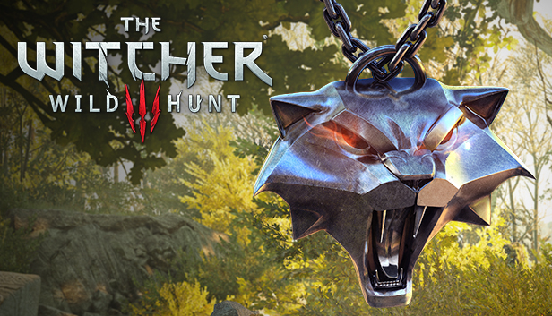

Bruxos Felinos
Os Gatos (ou Felinos) foram bruxos que desenvolveram estilos de combate baseados em velocidade, precisão e agilidade. Dessa forma, bruxos que as usam não causam muito dano, mas seus golpes podem surtir efeitos críticos mortais. Como consequência, seu equipamento foi projetado para maximizar flexibilidade e fornecer a maior variedade de movimentação.

Medalhao
O nome Gato foi escolhido pelos próprios bruxos que não tiveram mutações bem-sucedidas. Eles literalmente são bruxos falidos e são agressivos, cruéis e imprevisíveis. Por isso a fama de lunáticos, psicopatas e sádicos.
O símbolo do medalhão é uma cabeça de gato mostrando os dentes.
Flexibilidade moral
Infelizmente, os membros dessa escola se revelaram tão flexíveis em termos de moralidade e política quanto em sua armadura. Com o tempo, tornaram-se párias até em meio aos bruxos, dado o seu costume de aceitarem contratos de humanos tanto quanto de monstros, além de outras atividades não previstas no código de bruxos. Nos romances, Geralt de Rívia afirmou repetidas vezes que bruxos não aceitam dinheiro para matar pessoas. Uma das possíveis razões disso são as mutações, que tendem a criar um anormal número de bruxos psicóticos. Independentemente das razões, eles são conhecidos por terem traído a Escola do Lobo e gerado um massacre durante o torneio.
Where the Cat and the Wolf play
Durante a missão "Where the Cat and the Wolf play", caso Gaetan sobreviva, é possível ter acesso ao seu esconderijo a qual possui uma carta, onde Joël revela que a escola do gato havia sido tomada por soldados, e que os bruxos remanescentes haviam sido mortos ou desbandados.
Em The Witcher 3: Wild Hunt, é possível obter o equipamento da Escola do Gato.
Aceite um contrato de Aen Seidhe por um dh'oine quando puder, pois há menos probabilidade de levar uma facada nas costelas no lar da moeda. — Gezras